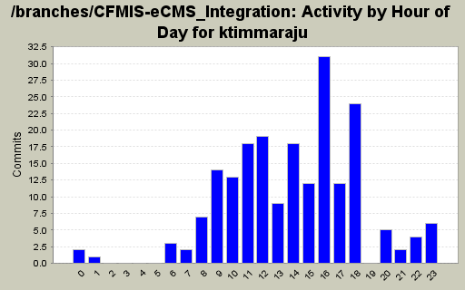
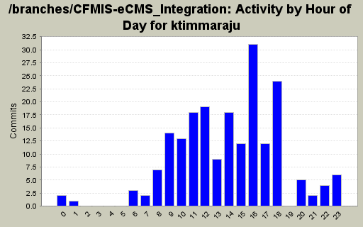
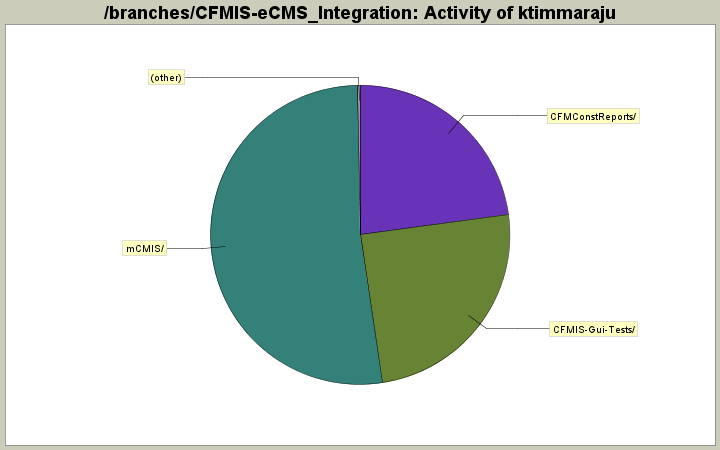

Activity by Clock Time



| Directory | Changes | Lines of Code | Lines per Change |
|---|---|---|---|
| Totals | 202 (100.0%) | 10206 (100.0%) | 50.5 |
| mCMIS/ | 134 (66.3%) | 5330 (52.2%) | 39.7 |
| CFMIS-Gui-Tests/ | 44 (21.8%) | 2525 (24.7%) | 57.3 |
| CFMConstReports/ | 19 (9.4%) | 2328 (22.8%) | 122.5 |
| mCMIS/Model/DataLayer/ | 4 (2.0%) | 23 (0.2%) | 5.7 |
| mCMIS/Queries/ | 1 (0.5%) | 0 (0.0%) | 0.0 |

Modified expressions for Filtering
3 lines of code changed in 1 file:
Modified Expression Now filtering is working. Paging only pending
20 lines of code changed in 1 file:
Modified in the layout
515 lines of code changed in 1 file:
Modified SQL Query and Paging and partial filtering is working.
93 lines of code changed in 1 file:
Modified the SQL Query
27 lines of code changed in 1 file:
Modified the SQL query and Expressions
0 lines of code changed in 2 files:
Modified the SQL Query
0 lines of code changed in 2 files:
Modified SQL Query
287 lines of code changed in 1 file:
Modified Expressions
29 lines of code changed in 1 file:
Modified the Query
68 lines of code changed in 1 file:
Modified the Report
4 lines of code changed in 1 file:
Added some expressions
626 lines of code changed in 1 file:
Modified the code
624 lines of code changed in 1 file:
Added required Fields in the Query
31 lines of code changed in 1 file:
Modified
1 lines of code changed in 1 file:
Added Basic Functionality
0 lines of code changed in 2 files:
Found fmsfeed is visibile if Repeater is empty. Fixed the issue.
1 lines of code changed in 1 file:
Bug 605 to test that Controls are disabled.
103 lines of code changed in 1 file:
Bug 605 Fixed
1 lines of code changed in 1 file:
Bug test for 604 added in DefaultAction
8 lines of code changed in 1 file:
(114 more)